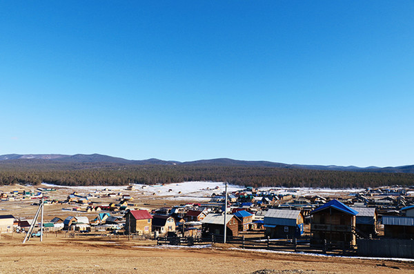
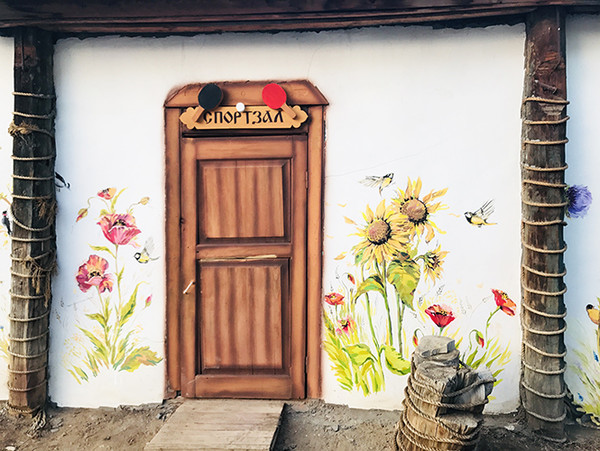
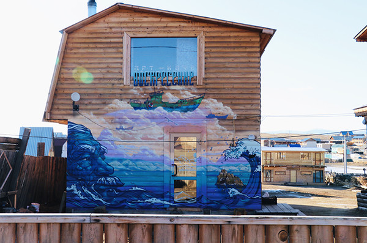

我最终从胡日尔的美术馆里带走了一幅画，画的是冬日的萨满岩，是日落时分。

我们未曾想过，胡日尔镇里令我们印象最深的会是它的小美术馆。与其说是美术馆，其实倒不如喊它小画廊更为贴切，几十平大小，大大小小的油画被悬挂在木制的墙壁上，有些未裱上画框的甚至叠放在入口处的长桌上，供人随意翻阅挑选，若是看上哪幅，除非挂得太高无法拿到，其余的皆可以直接取了去纪念品商店结账带走。

油画作者大多是不知名的画家，有些甚至是业余爱好者，画作内容也几乎全是贝加尔湖。这座欧亚大陆上最大的淡水湖泊，像一弯新月镶嵌在西伯利亚大陆上，经历了约2500万年时光，而今平静深邃地匍匐着，冬季结冰，夏日消融，每种季节都有着独特的风景，而画家们把这些风景用颜料一一记录下来，交给被它吸引的人们。 作为奥利洪岛上唯一能够长期居住的小镇，胡日尔无疑成为了观看贝加尔湖的最佳驻扎点。这座面积极小的小镇，位于奥利洪岛的西北部，若从高处往下看，奥利洪岛像是新月中的一道沟壑，胡日尔恐怕只能算沟壑中一点影子。

从伊尔库兹克乘车出发，需行驶近6个小时才能到达小镇胡日尔。我们出发时是个晚冬，贝加尔湖的冰层还未开化，看起来破破旧旧的小中巴能够从陆地直接开到冰面上。路途遥远，路况也并不算太好，可开车的俄罗斯小哥能够将顶着十几个大行李的中巴在冰面上开得飞起，我们挤在窄小的座位上眼望着窗外白茫茫的结冰湖泊，羽绒服下是被惊出的一身冷汗。 出发时是早上，到达时已近下午4点。预订行程从第二日开始，我们办理完入住后便开始了在小镇的闲逛。旅店工作人员用不太流利的英语告诉我们萨满岩的方向，我们沿着蜿蜒小路一路东绕西绕竟也将镇子逛了个大半。3月，湖面虽仍覆盖着坚硬的冰面，陆地上的雪却已化得差不多了。小镇太小，居住人口不过1500人，居住的木屋子也基本上由居民们自己搭建，天干物燥，山坡上极易起火，因此人们将街道建得很宽。原始的砂石路，道路两旁有深深凹陷下去的车辙，我们走在路上，只要身边有车经过，便会扬起一片沙尘，沙尘里有独属于西伯利亚的冷冽空气，同时也伴随着这个岛上小镇最朴实的人烟气息。
作者： 曹企鹅
传媒业的小透明，生活中的旅行者，愿过上从书本中汲取、在旅途中经历、用文字去表达的日子。微信公众号：曹企鹅的小树洞 TA的窝有一只企鹅
专栏最热文章
夏木尼，小王子的玫瑰城市
暹粒油淋鱼
西安：旧长安的画皮
漫山岛
胡日尔镇的美术馆
专栏其他作者
袁云准
旅日青年国际政治研究学者，草食男青年一只，
偏爱东瀛文化之纤细，孤身远行，游学定居于此，目前于东京某大学潜心钻研政经外交；
学术研究事务繁杂多忙，但凡有闲，定背包出行转换心情。
徐冉
荷兰小伙儿，艺术大学毕业，小众文艺男一枚； 曾在亚洲背包旅行十五个月，现在在北京学习中文。
斑马疆湖
斑马小姐与斑马先生，一行两人；独立撰稿、摄影纪实，专注南疆旅游文化。